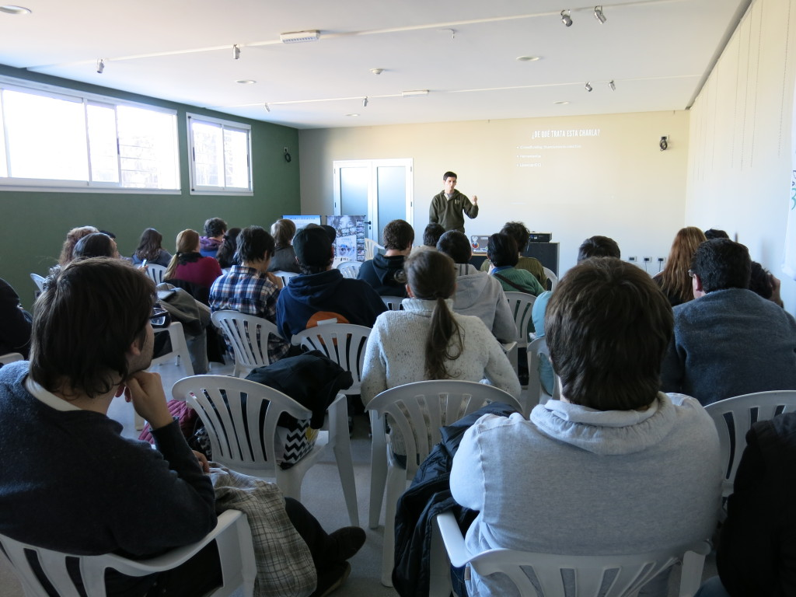

La semana pasada Colectivo Libre organizó una conferencia (llamada Conferencia de Software Libre del Litoral) y me invitaron a hablar sobre cultura libre o crowdfunding o Creative Commons. En particular, que cuente mi experiencia.
Di una charla llamada Cómo un programador escribe una novela: crowdfunding, herramientas y licencias en la que conté mis peripecias financiando la impresión de mis libros (como ese camino fue evolucionando), hablé de las herramientas que desarrollé para imprimir Xolopes y cerré explicando brevemente las distintas licencias Creative Commons disponibles.
La presentación la armé con slides.com, un sitio que utiliza la librería reveal.js: http://slides.com/juanjoconti/como-un-programador-escribe-una-novela#/

(más fotos)
Luego de la presentación hubieron muchos comentarios y preguntas. Estuvo muy bueno. ¿Te al perdiste? Probablemente vuelta a darla en la Feria del Libro de Santa Fe el sábado 13 de septiembre a las 18 hs.
Lamentablemente no fue grabada y las slides dicen poco por si solas. Sin embargo, acabo de recuperar el borrador de un post que nunca publiqué. Su contenido coincide con un tercio de la charla, aunque tiene mucho más detalle técnico del que expuse en la conferencia:
Cómo escribí Xolopes
Este artículo habla sobre la novela corta Xolopes.
Durante mis últimas vacaciones estuve tomando notas rápidas en el celular. Ideas, conversaciones, principios, finales. Al mismo tiempo estuve leyendo una novela cuya estructura me gustó mucho y quise imitar. Quise hacer un cover.
—¿Y qué escribís? —se interesa el marido de la señora.
—Cuentos.
—Ah... hay que tener imaginación para eso.
—No tanta, me la paso recogiendo voces de otros.
Xolopes #46
La novela sería entonces una sucesión de textos, en su mayoría cortos, con un orden propio. El problema era que no conocía ese orden, que nuevas partes irían surgiendo y que otras serían eliminadas. Escribir todo en un único documento, "un Word", no parecía una elección correcta. Como me gusta programar, la solución a mi problema sería un programa.
... en lugar de ser una sucesión de pocos capítulos largos, se forma con una multiplicidad de textos cortos, uno a continuación del otro, una multitud de voces que van ingresando al texto para formarlo.
Xolopes #122
Pasé cada una de las partes que tenía hasta el momento a archivos de texto. Uno por cada parte. En otro archivo (índice) escribí un orden tentativo para las partes. Finalmente, escribí un script en Python (que se fue refinando y extendiendo) capás de leer índice y armar un documento Latex con las partes y el orden especificado. Ese documento Latex puede compilarse a pdf, generando el archivo que voy a enviar a la imprenta.
Con el correr de los meses fui escribiendo el resto de las partes. Algunas historias son recuerdos de otros viajes, otras son el resultado de ejercicios en el taller, otras, anécdotas prestadas y otras, totales inventos. Mientras lo hacía, iba probando distintos ordenes hasta encontrar EL ORDEN definitivo que tendría la obra, ese que tenía desde antes de ser escrita pero que aún no conocía.
Control de cambios
Me resulta entretenido participar de todo el proceso de la concepción de un libro. Desde tipear sus palabras hasta imprimirlo y voy refinando e incrementando mi participación en todo el proceso lo más que puedo. En este experimento, a diferencia de los dos anteriores (1 y 2), intento
Además de escribir la novela usando un programa escrito especialmente para escribirla, la misma fue escrita de forma similar a la que se escribe un programa. Utilicé un sistema de control de versiones para llevar registro de cada uno de los cambios que iba haciendo.
Ejemplo: https://github.com/jjconti/novela-workflow/commit/47805ecaf6d873363f10220b27113ef53b6f1855#diff-b1d745729a42a8029705f6c847066918
Herramientas
Otras herramientas fueron escritas a la vez que se escribía la novela pero no quiero irme en detalles. Temo aburrir con muchos tecnicismos a los lectores, autores, editores que lean este post. También temo aburrir con muchas palabras a los hackers, programadores y geeks que lean este post. Por lo tanto voy a cerrarlo ahora mismo :)
Este es el set de herramientas propias y archivos utilizado para generar el pdf de la novela al momento de escribir este post. A los ojos de un programador, son herramientas simples que uno puede hacerse en un su casa. Pero tal vez les sean interesantes a autores o editores:
-
format.sh (evita tener archivos muy "anchos" limitando el número de columnas)
-
xolopesBase.tex (template del documento Latex utilizado)
-
regenerateIndex.py (le agrega al índice las primeras palabras de cada archivo para tener contexto y ayudarme a no perderme entre los nombres de archivos)
-
xolopes.sh (programa maestro, llama a xolopes.py y compila los documentos Latex a pdf)
-
xolopes.py (genera el documento Latex en base a las partes y al índice, en dos versiones, con imágenes y sin imágenes)
-
getDot.py (genera el archivo .dot que representa el mapa de la novela)
-
map.sh (en base al arcihvo .dot que representa el mapa de la novela genera el mapa en distintos formatos)


{kind=link}
{kind=link}
{kind=link}
{kind=link}